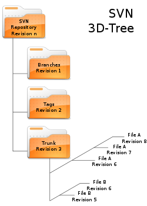

ATTENZIONE: questa pagina contiene invettive e
ed improperi contro il sistema SVN ed in particolare contro la sua
implementazione da parte di GitHub.
L'autore riconosce che
questi potrebbero essere causati da sua incompetenza e/o imperizia e
non da reali mancanze delle infrastrutture informatiche. Chiunque
potesse sentirsi turbato da eventuali parole malevole è pregato di
non proseguire la lettura.
Per fermarsi ora:
Per chi volesse proseguire:
- Storia
- Caratteristiche
- File system di un repository
- La nostra esperienza
Storia

SVN nasce da un progetto di CollabNet. Agli inizi del nuovo
millennio, l'azienda statunitense diede il via allo sviluppo di un
software di versioning capace di soppiantare CSV superandone le
limitazioni, prima tra tutte la non atomicità dei commit. Un anno più
tardi è già ad uno stadio di sviluppo tale da permettere di gestire
attraverso di esso il codice del progetto stesso. La prima verione
ufficiale viene rilasciata nel 2004. Il successo è tale che il nuovo
sistema soppianta in breve tempo il più blasonato predecessore e si
impone come leader dapprima nel mondo del software libero, poi anche
negli ecosistemi aziendali. Nel 2009 il progetto SVN entra nella
galassia Apache, dove occupa tuttora un posto di rilevo.
Caratteristiche
SVN è, insieme a Git, uno dei più completi strumenti per la
condivisione del codice. Le sue principali caratteristiche sono:
| Nome del progetto |
Subversion |
| Creatore |
CollabNet |
| Attuale proprietario |
Apache foundation |
| Prima release |
20 ottobre 2000 |
| Ultima release stabile |
1.8.13 (Marzo 2015) |
| Linguaggio |
C |
| Licenza |
Apache License 1.7 |
- I commit sono atomici: le operazioni di modifica di una
serie di file sono indivisibili. Questa caratteristica non era
supportata da CSV e tale carenza cuasva, non di rado, incoerenze
all'interno di un progetto.
- La storia di tutte la modifiche a file o cartelle viene
conservata, anche quando vengono interessati unicamente i metadati e
non il contenuto del file (non viene conservato il timestamp).
- Supporto nativo alla condivisione di file binari: il
protocollo di salvataggio provvede a ridurre al minimo l'occupazione
di memoria sul server.
- La comunicazione con il server Apache avviene attraverso
protocollo Http: è diffusa anche una versione di server custom,
chiamato svnserve, che implementa un protocollo proprietario sopra
TCP/IP.
- La creazione di nuove brach è un'operazione semplice e
veloce, dal momento che SVN non differenzia tra cartelle e branch:
entrambe vengono trattate come repository all'interno di altri
repository.
- La creazione di nuove branch è un'operazione semplice e
veloce, dal momento che SVN non differenzia tra cartelle e branch:
entrambe vengono trattate come repository all'interno di altri
repository.
- Il software - e la maggior parte dei client - vengono
distribuiti sotto licenza open source ApacheLicense 1.7.
- I merge con tra branch vengono registrati: questo permette
al sistema di operare unioni automatiche di branch, senza che un
intervento umano specifichi i singoli file da sottoporre a merge. In
caso di conflitti, è indispensabile l'intervento degli sviluppatori.
Il file system di SVN

Il file system di un repository SVN può essere pensato come uno
spazio a due dimensioni: sono necessarie due coordinate per
identificare univocamente una risorsa.
- Il path (come nei file system dei comuni sistemi operativi)
- La versione
Ogni versione, infatti, è un file system separato: ha una propria
root directory ed una serie di sotto-cartelle. Ogni file è
memorizzato come un link alla versione più recente: sono inoltre
conservate tutte le differenze tra una revisione e l'altra. Lo spazio
occupato da un repository SVN risulta quindi essere proporzionale
alll'entità delle modifiche via via apportate e non al loro numero.
Il file system di un repository SVN utilizza il metodo delle
transazioni per garantire l'indivisibilità dei commit. Ogni
transazione si riferisce ad una root directory, non necessariamente
la più recente, e solo su quella opera. Una transazione può avere
successo, oppure essere rifiutata. Nel primo caso, i file modificati
entrano a far parte del repository, nel secondo tutte le azioni
vengono annullate e l'intero file system viene riportato alla
condizione precedente l'avvio della transazione. In tal modo si
evitano peroblemi di incoerenza dovuti alla coesistenza di più
versioni in una stessa root.
xTrEAM ed SVN
Doveva essere un ruolo tranquillo: qualche approfondimento su
Wikipedia, qualche dritta data ai compagni di squadra, qualche
arrabbiatuara passeggera e nulla più. La spina dorsale di SVN - il
sistema client-server - è ormai raffinato e efficiente. I problemi
noti sono pochi e facilemente superabili. Dover cancellare e ricreare
un pacchetto invece di utilizzare la funzione rename non è poi una
così grande fatica.
Invece i responsabili SVN di tutti i
gruppi sono stati coinvolti in una lotta. Contro il sistema. E contro
che lo sfrutta.
La chiusura di Google Code - il provider SVN
di riferimento - ha costretto tutti i gruppi del nostro corso a
cercare soluzioni alternative. Su indicazione della stessa azienda di
Mountain View, la maggior parte di noi si è orientata su GitHub.
Pessima scelta.
Fondato da alcuni dei principali
sviluppatori di linux, GitHub si propone come una delle principali
piattaforme di condivisione del codice. Nonostante offra supporta sia
a repository SVN che a Git, il nome suggerisce una certa parzialità.
Sarà un caso, ma abbiamo avuto modo di constatare che il servizio git
opera molto più fluidamente di quello SVN. Per usare un eufemismo. I
problemi che abbiamo riscontrato e affrontato includono, ma non si
limitano, a:
- Impossibilità di creare un nuovo progetto: è stato
necessario effettuare il primo commit con git.
- Impossibilità di rinominare un pacchetto: occorre
concellarlo e ricrearlo.
- Enorme incidenza di commit falliti: a volte è stato
necessario inviare al repository un file alla volte, provocando
un'ovvia distorsione della successione temporale delle verisoni.
Si potrebbe proseguire, ma non sarebbe di alcun beneficio. Per
terminare, è forse più opportuno ricordare il grande valore
istruttivo dell'esperienza di lavorare, di collaborare a distanza.
Questo porta alla necessità, mai incontrata prima, di studiare e di
capire, i progressi compiuti dai propri compagni. Grazie alla
possibilità di confronto tra veriosni differenti dello stesso file,
SVN è un alleato fondamentale in questa sfida.
E' tempo di porre termine a questa parentesi personale: non
rimane che chiedere umilmente perdono al lettore per la forma e per i
contenuti di questa sezione. Parafrasando un personaggio ben più
sfortunato di chi scrive, "la carta è più paziente degli uomini". I
monitor ancor di più.